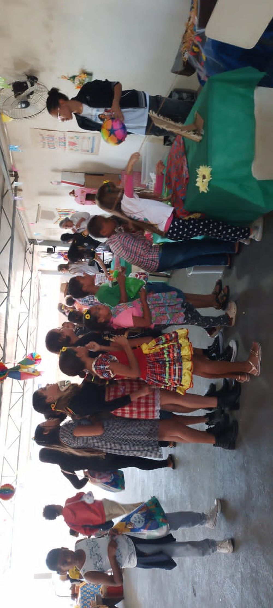

Livraria e Biblioteca
Um amplo acervo para quem deseja conhecer ou aprofundar seus estudos, com empréstimo e venda de livros.
4.000+
livros disponíveis no acervo

As reuniões públicas são momentos de aprendizado, reflexão e acolhimento, abertas a todas as pessoas, independentemente de religião ou experiência anterior com a Doutrina Espírita.
Durante as reuniões, os visitantes podem participar de:
Um momento de conversa individual, acolhimento e orientação à luz da Doutrina Espírita, com apoio e escuta respeitosa para quem deseja conversar sobre suas dificuldades ou buscar esclarecimentos.
A casa oferece tratamento espiritual para aqueles que buscam auxílio e fortalecimento espiritual.
Um amplo acervo para quem deseja conhecer ou aprofundar seus estudos, com empréstimo e venda de livros.
Grupos voltados ao aprendizado e aprofundamento da Doutrina Espírita.

A música como parte do acolhimento, presente nas reuniões públicas, trazendo reflexão e elevação espiritual.

Um espaço dedicado às crianças, com atividades para cada faixa etária, de forma leve, educativa e acolhedora.
Arrecadação de alimentos realizada por voluntários junto à comunidade, com montagem e distribuição de cestas básicas para famílias em situação de vulnerabilidade.

Todos os domingos preparamos sopa e almoço, com entrega de marmitas para pessoas em situação de necessidade.
Realizado duas vezes ao ano, o bazar contribui para a manutenção das atividades assistenciais e dos diversos trabalhos desenvolvidos pelo Centro.